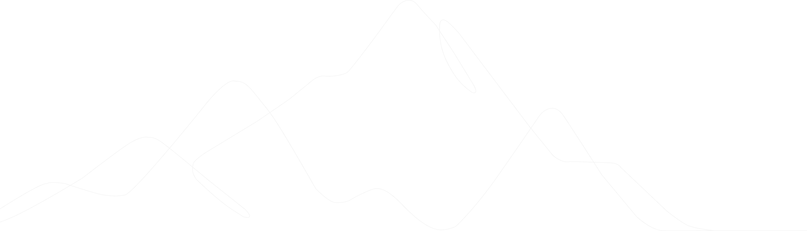
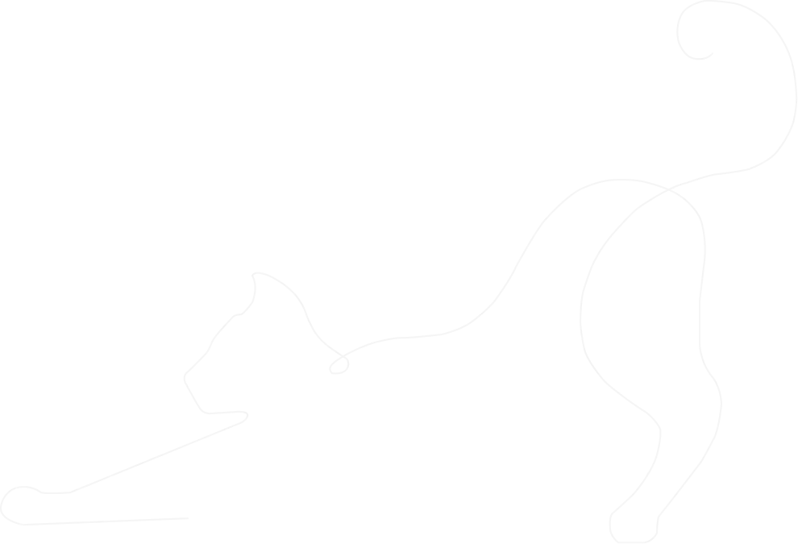
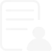

Lumière cinema
Een interactieve cinema-app met focus op UX laws, dark mode en variabelen.
Bekijk project →
Ik ben een
UX/UI Designer

Hallo! Ik ben Lorelien Michiels, derdejaarsstudent Digital Experience Design aan Thomas More in Mechelen, met een focus op UX/UI design en User-Centered Design.
Mijn passie ligt in het vertalen van gebruikersbehoeften naar duidelijke wireframes, toegankelijke interfaces en interactieve prototypes in Figma.
Vanaf februari 2027 zoek ik een boeiende stageplek als junior UX/UI designer in regio Mechelen of Leuven om een designteam te versterken.
Lees meer over mij

Figma illustration
User-centered design
User testing
UX research
Prototyping
Oog voor detail
Zelfstandig werken
Empathisch
Kritisch denken
Gestructureerd
Een interactieve cinema-app met focus op UX laws, dark mode en variabelen.
Bekijk project →
Een overzichtelijk website-redesign en WordPress-concept voor een Mechelen jazzclub.
Bekijk project →
Een toegankelijke mobiele website ontworpen volgens de WCAG-richtlijnen.
Bekijk project →
Een creatieve verzameling van zelfgemaakte illustraties, iconen en animaties.
Bekijk project →Een warme branding en website voor een organisatie die jongeren ondersteunt.
Bekijk project ->